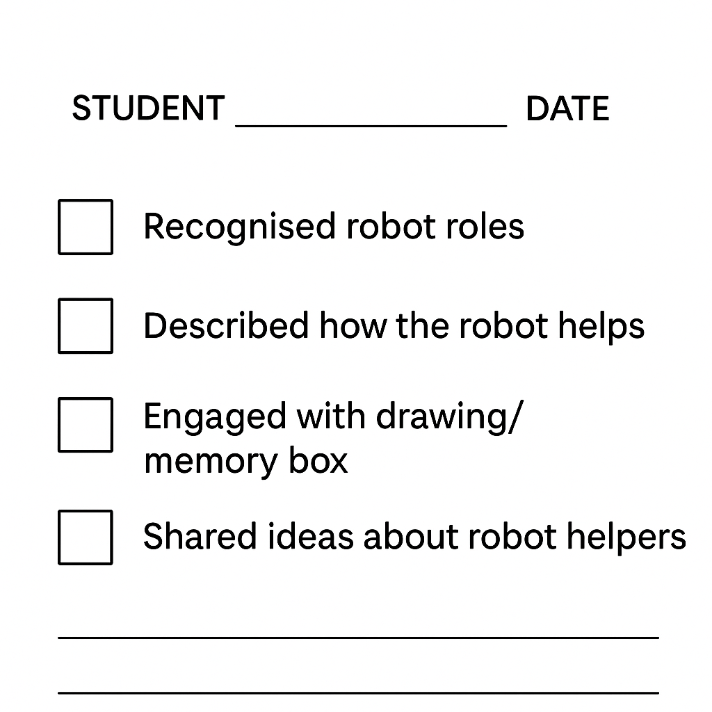

How AI Learns and Solves Problems
Can a Robot Be a Helper?
Resources & Downloads
Download the PDF versions of this scenario or the associated attachments.
Target Group: 4 - 7 y.o.
Activity Duration: 2.5–3 hours (Modular)
Key Learning Goals:
- Understanding AI: See AI as a helpful tool, not magic.
- Human vs. Machine: Learn that robots need people to help them learn.
- Curiosity: Explore real-life examples of AI helpers (vacuums, smart speakers).
- Creativity: Imagine and draw a personal robot helper.
Learning Outcomes
Students will be able to:
KNOWLEDGE & UNDERSTANDING:
- Begin to understand what a robot or AI assistant is.
- Learn that AI can help with tasks but still needs people.
- Explore real-life examples of AI being helpful.
SKILLS & ABILITIES:
- Storytelling and discussion about technology.
- Guided role-play to understand how robots follow instructions.
- Drawing and creativity to express ideas.
ATTITUDES & VALUES:
- Build curiosity about technology.
- Reflect on the difference between humans and machines.
- See AI as a tool to be used responsibly.
European Dimension / Erasmus+ Connection
- Early Digital Literacy: meaningful introduction to technology concepts.
- Critical Thinking: Encouraging children to question "Can a robot do this?".
- Inclusion: Using familiar examples to make tech accessible to all children.
1. Resources and Tools
Required Materials:
- Puppet or toy robot.
- Printable cards: "Robot guesses right/wrong", "People know better".
- Drawing paper and pencils.
- Video: Robots in everyday life.
- Assessment Checklist (see below).
2. Working Methods
- Storytelling: "The Robot Who Got It Wrong".
- Guided Role Play: Acting out robot tasks.
- Drawing & Creativity: Designing a robot helper.
- Group Reflection: Circle time discussions.
Activity Overview
| Phase | Duration | Activity | Description |
|---|---|---|---|
| Intro | 20 min | Storytime | "The Robot Who Got It Wrong": Discussing why the robot made mistakes (e.g., putting shoes in the fridge) and how people help. |
| Research | 20-30 min | Real AI Helpers | Video & Vote: Watching clips of robots (vacuums, delivery). Voting: "Can a robot do this alone, or does it need a person?" |
| Creative | 30-40 min | Robot Helper & Drawing | Sorting Game: Is this job for a Robot, a Person, or Both? Drawing: Invent your own robot helper. |
| Reflection | 20 min | Circle Time | Sharing drawings. Discussing: "What can robots do? What do people do best?" |
3. Introduction and Motivation
Story: The Robot Who Got It Wrong
Goal: Spark curiosity and show that robots need human help.
- The Hook: Teacher introduces a puppet robot who wants to help but gets confused.
- The Story: The robot tries to clean the kitchen but uses shampoo instead of soap! It puts cutlery in the freezer and milk in the cupboard.
- Discussion: "Why did the robot get it confused?" "How do people know better?"
4. Research and Learning
Exploring Real AI Helpers
Video: Watch "SciShow Kids: Robots Helping Humans" (or similar).
Discussion:
- "Have you seen a robot vacuum? Can it find your lost socks?" (No, it just cleans).
- "Can a smart speaker give you a hug?" (No, it can only play music).
Activity: Show cards of different jobs. Children vote thumbs up/down: "Can a robot do this well?"
5. Creative Application
Activity: Robot Helper or Human Job?
Sorting Game: The teacher holds up task cards (e.g., "Tidy room", "Give a hug", "Paint a picture"). Children move to corners of the room marked Robot, Person, or Both.
Drawing Task: Design Your Robot
Children draw a robot that helps someone do something useful.
- Prompt: "What does your robot do well?" (e.g., carry heavy things).
- Prompt: "What does it need help with?" (e.g., knowing where to go).
6. Reflection and Evaluation
Circle Time
Children share their drawings. The class creates a "Memory Box" adding drawings of how AI helped them today.
Assessment Checklist
Teachers can use this simple checklist to observe understanding:

This work is licensed under a Creative Commons Attribution 4.0 International License.